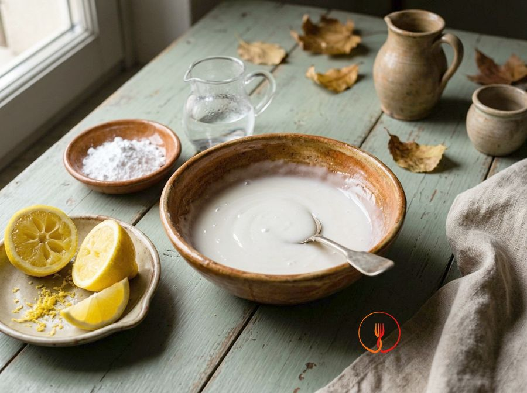

Glassa di zucchero
Ingredienti
- zucchero a velo150 gr
- acqua calda25 ml
- succo di limone5 ml
Allergeni
Nessuno dei 14 allergeni principali tra gli ingredienti.
Può contenere tracce di: Glutine, Latte.
Procedimento
- Setaccia lo zucchero a velo in una ciotola per eliminare eventuali grumi.
- Aggiungi il succo di limone e mescola con una spatola.
- Versa l'acqua calda poco alla volta, continuando a mescolare.
- Lavora fino a ottenere una glassa liscia e omogenea.
- Controlla la consistenza: deve colare lentamente dalla spatola senza risultare completamente liquida.
- Se è troppo densa aggiungi poche gocce d'acqua; se è troppo liquida incorpora altro zucchero a velo.
- Utilizza immediatamente per decorare biscotti, ciambelle e torte.
- Lascia asciugare completamente prima di impilare o confezionare i dolci.
Consigli dello chef
Consigli, errori e alternative:
- Non aggiungere troppa acqua tutta insieme.
- Per una glassa più bianca elimina il succo di limone.
- Per una variante colorata utilizza coloranti alimentari.
- Puoi sostituire l'acqua con succo d'arancia.
Valori nutrizionali (stima)
| Per porzione (90 g) | Per 100 g | |
|---|---|---|
| Energia | 1222 kJ / 292 kcal | 1360 kJ / 325 kcal |
| Proteine | 0.0 g | 0.1 g |
| Carboidrati | 75 g | 83 g |
| di cui zuccheri | 75 g | 83 g |
| Grassi | 0.0 g | 0.0 g |
| di cui saturi | 0.0 g | 0.0 g |
| Fibre | 0.0 g | 0.0 g |
| Sale | 0.0 g | 0.0 g |
Valori stimati con l'AI su dati medi CREA / USDA: sono indicativi e non sostituiscono il parere di un medico o di un nutrizionista.
Apri la ricetta nell'app per la lista della spesa, le schede ingredienti e i negozi vicini.